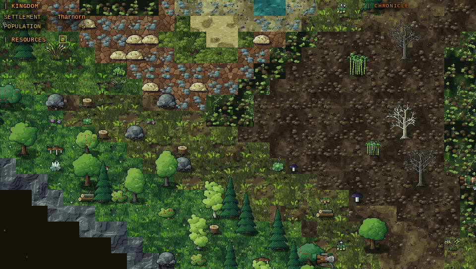
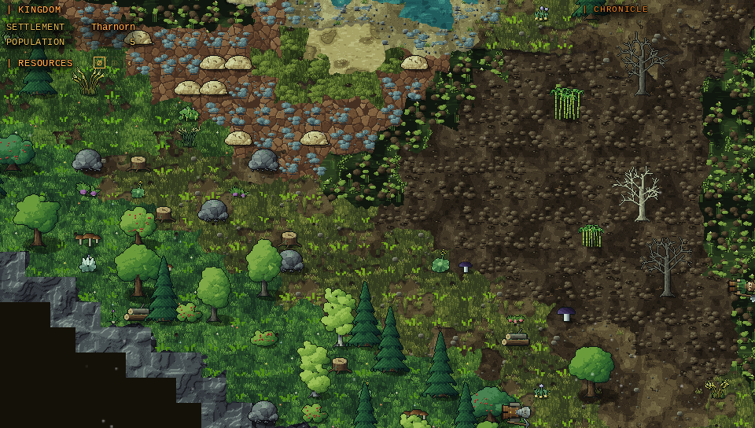
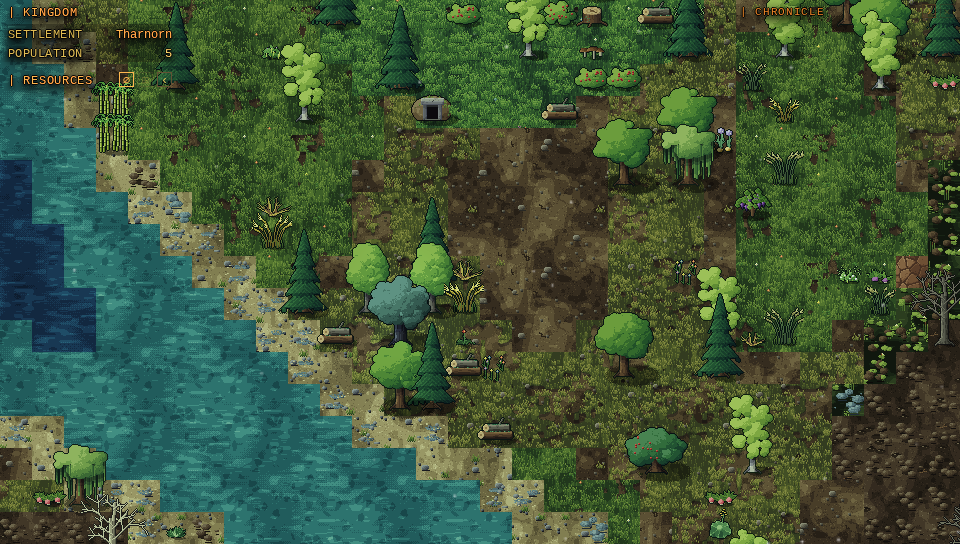
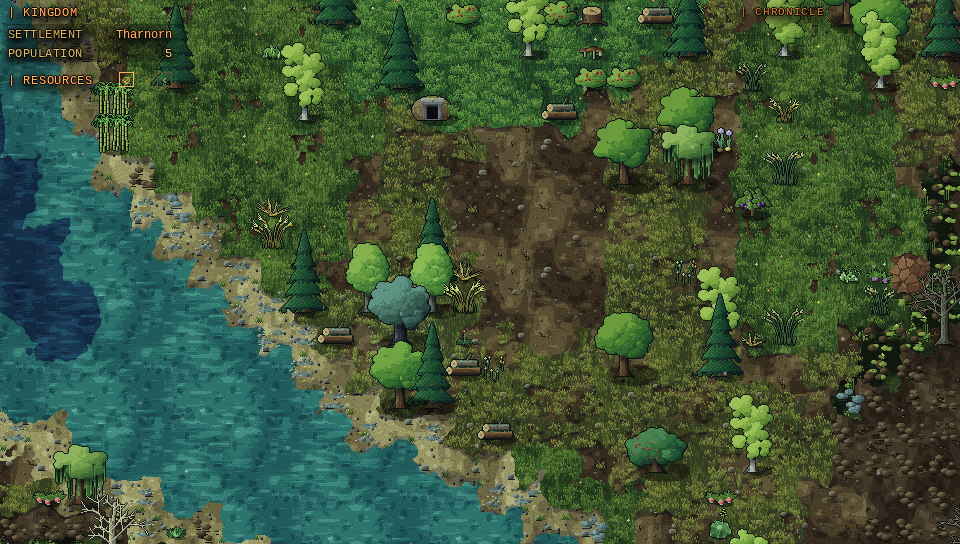
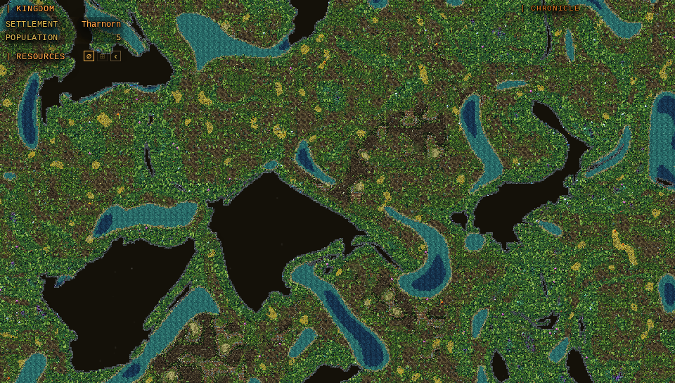
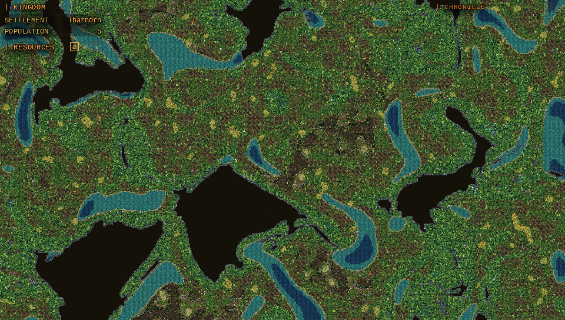
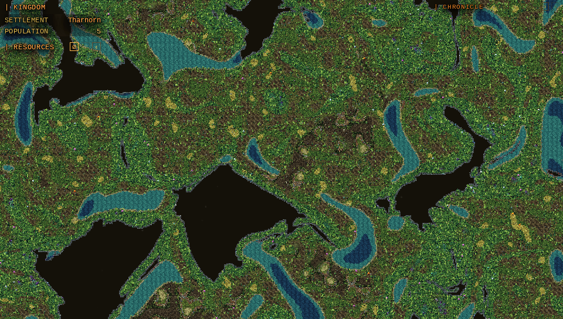

Same save, same camera, noon light, painted tiles on. 960 x 600, software GL.
Colony at 32 px: grass, dirt, rocky ground, mountain lower left


Lake shore at 32 px: water, riverbank, grass, dirt


Whole map (fit zoom)


